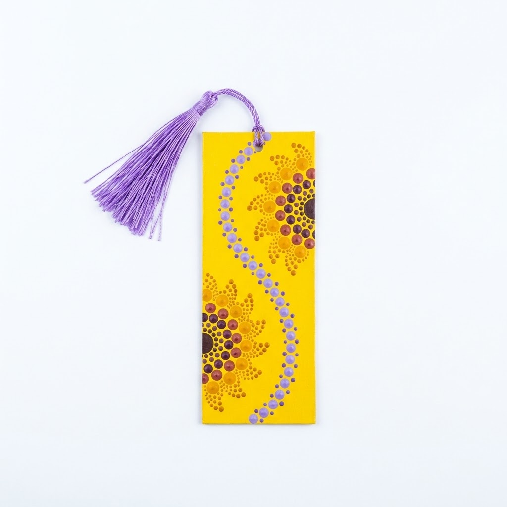

Separador Girasoles Dorados
Descripción del Producto
Hermoso separador de libro decorado con la técnica del puntillismo, presentando vibrantes girasoles dorados sobre fondo amarillo. Cada punto fue colocado a mano con paciencia y dedicación, creando un diseño único lleno de energía y color que iluminará tus páginas favoritas.
Incluye una elegante borla morada que no solo es funcional sino que añade un toque de sofisticación. Fabricado en material resistente y duradero, perfecto para marcar tus lecturas sin dañar las páginas. Cada pieza es única y está hecha con amor.
Características:
- Técnica: Pintura en puntillismo
- Diseño: Girasoles dorados sobre fondo amarillo
- Incluye borla decorativa color morado
- Material: Cartón resistente laminado
- Dimensiones: 5 cm x 15 cm (tamaño estándar)
- Decorado 100% a mano
- Cada pieza es única e irrepetible
- Ideal como regalo o uso personal